CLASE 2 - GEOFÍSICA DE MEDIOS GRANULARES
THOMAS GALLOT,
CAMILA SEDOFEITO
Instituto de Física,
Facultad de Ciencias,
Universidad de la República
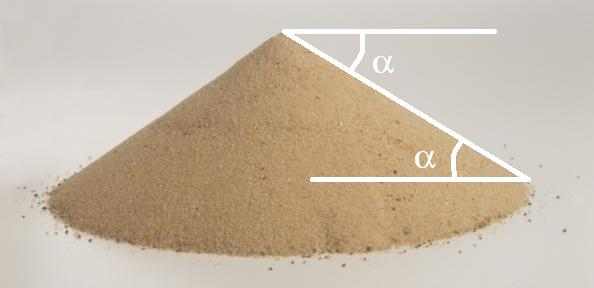
El ángulo de reposo $\alpha$ es el ángulo máximo que forma la superficie libre de un montón de granos con la horizontal antes de que se produzca una avalancha.
Materiales secos: $17° \leq \alpha \leq 42°$
Materiales cohesivos: $45° \leq \alpha \leq 90°$
Depende de: forma de los granos, rugosidad superficial, humedad, distribución de tamaños.
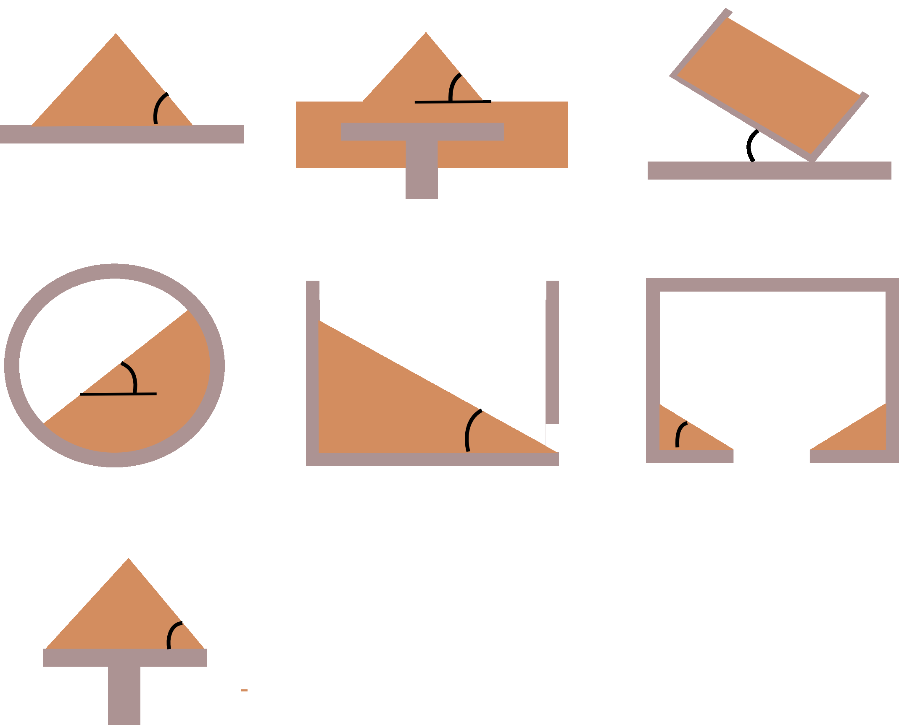
Métodos de medición del ángulo de reposo
Compacidad, fracción de volumen ocupado, packing fraction, volume fraction: $\phi$, $c$, $\eta$
No confundir con la densidad numérica:
Si todas las partículas son iguales ($v_g$: volumen de una partícula):
Porosidad: $\epsilon = 1 - \phi$
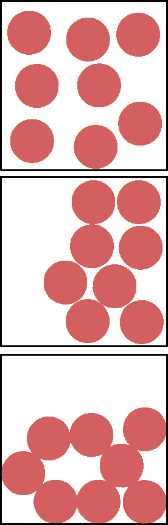
Celda unitaria: cuadrado de lado $2R$, contiene 1 disco.
Es el empaquetamiento más denso posible en 2D (Thue, 1892).
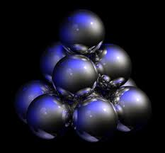
Límite 2D: $\displaystyle 0 < c < \frac{\pi\sqrt{3}}{6} \approx 0.91$ (hexagonal)
| Estructura | $\phi$ | $z$ |
|---|---|---|
| Cúbica simple (SC) | $\dfrac{\pi}{6} \approx 0.524$ | 6 |
| BCC | $\dfrac{\pi\sqrt{3}}{8} \approx 0.680$ | 8 |
| FCC / HCP | $\dfrac{\pi}{3\sqrt{2}} \approx 0.740$ | 12 |
Conjetura de Kepler (1611): El empaquetamiento más denso de esferas idénticas en 3D es $\phi = \frac{\pi}{3\sqrt{2}} \approx 0.7405$, alcanzado por FCC y HCP.
Demostrado por T. Hales (1998, publicado 2005).
Límite 3D: $\displaystyle 0 < \phi < \frac{\pi}{3\sqrt{2}} \approx 0.74$
Empaquetamientos muy sueltos:
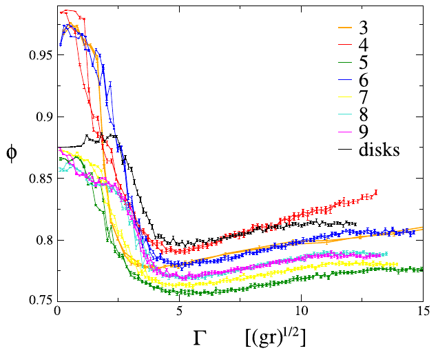
Polvos cohesivos (3D): $0.15 < \phi < 0.48$
Cuando partículas pequeñas llenan los intersticios de las grandes, la compacidad aumenta significativamente.
Mezcla bidispersa:
donde \(x_2\) es la fracción volumétrica de la especie pequeña, y \(\phi_1\), \(\phi_2\) son las compacidades de cada especie por separado.
Empaquetamiento de Apolonio: rellenando sucesivamente los intersticios con esferas cada vez más pequeñas, \(\phi \to 1\) para polidispersidad infinita.
Los medios granulares naturales son polidispersos — comprender \(\phi\) requiere ir más allá del caso monodisperso.
Ejemplos naturales:
La distribución de tamaños se caracteriza por la curva granulométrica y el coeficiente de uniformidad \(C_u = d_{60}/d_{10}\).
Andreotti, Forterre & Pouliquen, Granular Media (2013), §3.1.3, p.64–65.
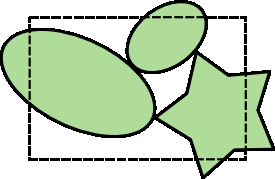
Geometría básica
Fotografía
$\phi = \dfrac{N_{\text{black pixels}}}{N_{\text{pixels}}}$
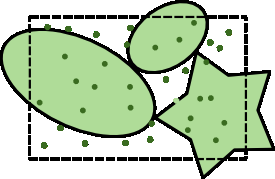
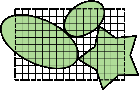
Geometría probabilística
$\phi = \dfrac{N_{\text{hits}}}{N_{\text{shots}}}$
Calibrar con
capacidad eléctrica
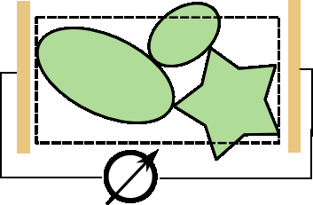
Medir la altura: $\phi = \dfrac{Nv_g}{Ah}$
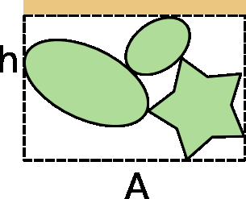
Rayos X y gamma son los métodos estándar en geofísica de campo y laboratorio — permiten medir \(\phi\) de forma no destructiva en muestras opacas y a diferentes profundidades.
Andreotti, Forterre & Pouliquen, Granular Media (2013), §3.1, Box p.60–61.
El número de coordinación $z$ cuenta los vecinos más cercanos (primera capa) de una partícula.
El número de contacto cuenta solamente los vecinos que están en contacto mecánico real.
Si los granos son convexos:
Valores máximos (monodisperso):
Esferas (3D): $z_{\max} = 12$ | Discos (2D): $z_{\max} = 6$
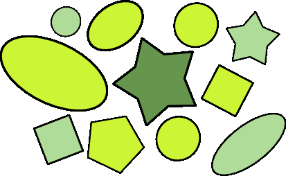
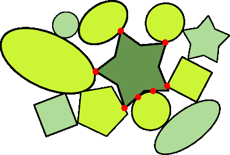
(cualquier forma convexa, partículas rígidas)
(contactos puntuales: ligaduras = fuerzas)
Valores experimentales (confocal):
$\phi = 0.4 \to \langle z \rangle = 4$; $\phi = 0.65 \to \langle z \rangle = 8$
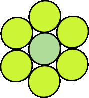
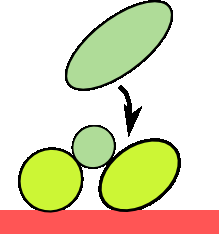
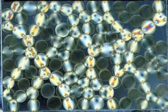
Behringer (fotoelásticas)
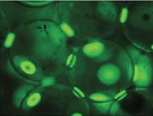
Kudroli
$4\pi r^2 \rho\, g(r)\, dr =$ probabilidad de encontrar el centro de una partícula en un cascarón esférico de radio $r$ y espesor $dr$, centrado en otra partícula.
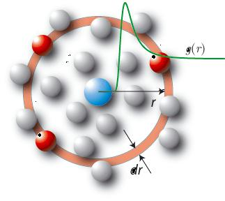
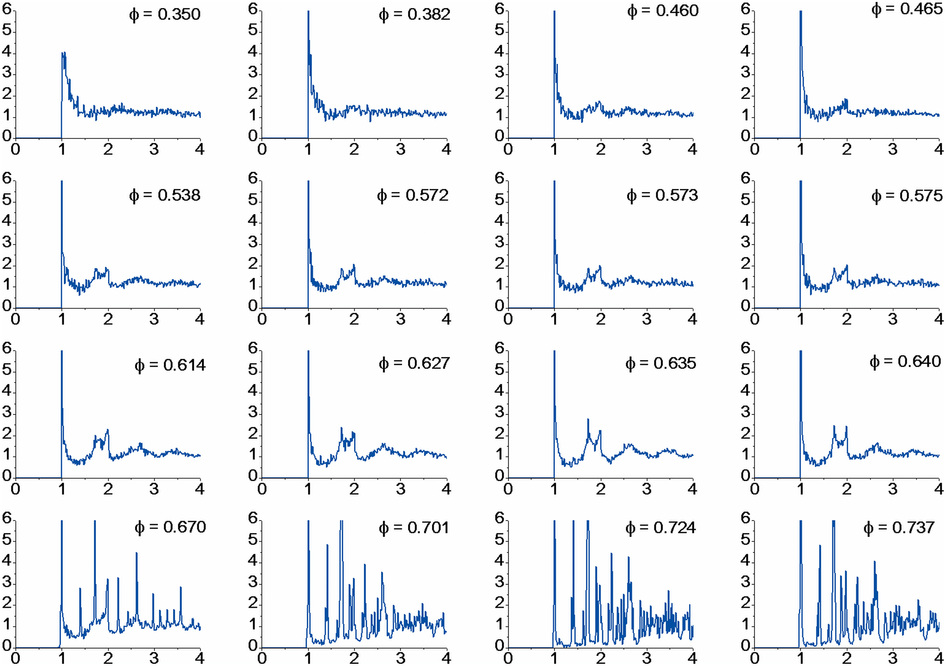
$\displaystyle\int_0^\infty 4\pi r^2 \rho\, g(r)\,dr = N - 1$ — $h(r) = g(r) - 1$ — $S(k) = \mathcal{F}\{h(r)\}$ (factor de estructura)
M. Palombo et al., 2013, Scientific Reports.
Algoritmo: barrer todos los pares de partículas, poner la distancia entre sus centros en un histograma con bin $dr$, normalizar con $4\pi r^2 \rho\,dr$.
for i in range(N):
for j in range(i+1, N):
rij = dist(pos[i], pos[j])
bin = int(rij / dr)
if bin <= maxbin:
hist[bin] += 1
# Normalizar
for k in range(1, maxbin+1):
r = (k - 0.5) * dr
shell = 4*pi*r*r*dr
g[k] = hist[k] / (shell*rho*N)Interpretación de $g(r)$:
El factor de estructura $S(k) = \mathcal{F}\{h(r)\}$ se mide en experimentos de scattering (rayos X, neutrones).
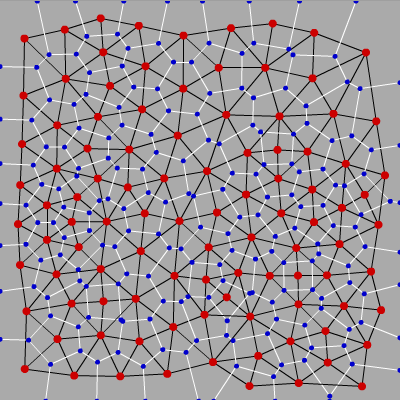
T. Aste et al. (varios artículos)
Aplicaciones: asignar un volumen local a cada grano para calcular $\phi_{\text{local}}$; identificar defectos cristalinos; segmentar imágenes experimentales. Implementación: Voro++ (http://math.lbl.gov/voro++/)
Experimento de Chicago (Knight et al., 1995): al someter una columna granular a vibraciones verticales repetidas, la compacidad aumenta logarítmicamente:
donde \(\phi_\infty\) es la compacidad asintótica, \(\Delta\phi\) la amplitud de relajación, \(\tau\) un tiempo característico y \(B\) una constante adimensional.
Observaciones clave:
Compactación por presión — ley de Heckel:
Ampliamente usada en farmacéutica y metalurgia de polvos para caracterizar la compresibilidad.
La compactación logarítmica es universal en medios granulares — análoga a la densificación de sedimentos geológicos bajo su propio peso a lo largo del tiempo geológico.
Andreotti, Forterre & Pouliquen, Granular Media (2013), §3.1.4, p.65–70. Knight et al., Phys. Rev. E 51 (1995), 3957.
Experiencia numérica: de packing aleatorio a jamming
Objetivos:
Herramientas: Python (NumPy, SciPy, Matplotlib); Notebook 05_Packing_Voronoi.ipynb
Valores clave en 2D:
| Configuración | $\phi$ |
|---|---|
| Random Loose Packing (RLP) | $\approx 0.82$ |
| Random Close Packing (RCP) | $\approx 0.84$ |
| Hexagonal (HCP) | $\frac{\pi}{2\sqrt{3}} \approx 0.9069$ |
Jamming: transición de un estado "suelto" (sin rigidez) a un estado "jammed" (rígido), a un $\phi_J$ crítico donde $z$ alcanza el valor isostático.
Clase 3: Descripción estructural II
Preparar: J. Duran, Sands, Powders, and Grains — Cap. 2 (continuación); Andreotti et al., Granular Media — Cap. 2